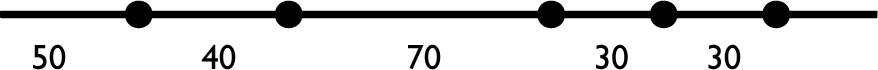
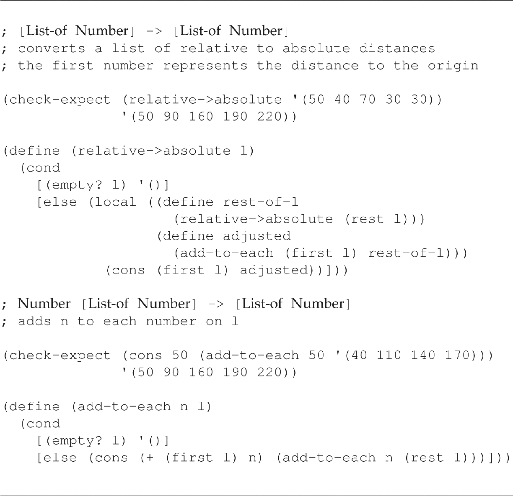
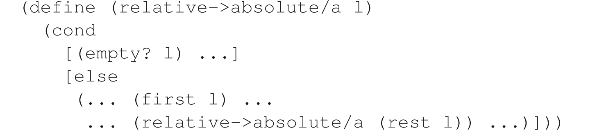
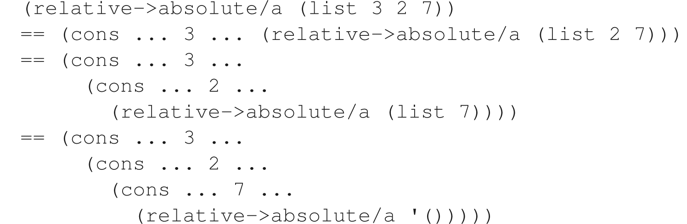
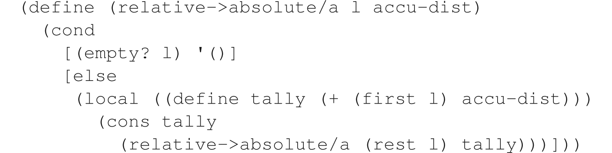
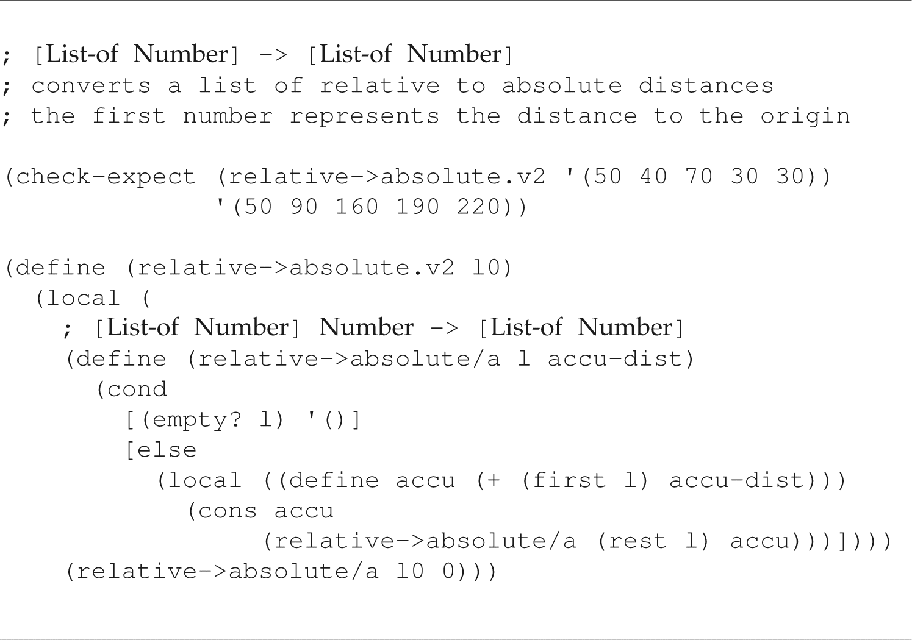
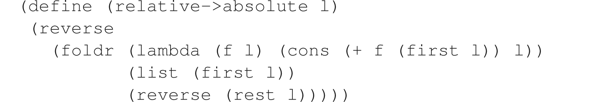

31.1 A Problem with Structural Processing
Let’s start with a seemingly straightforward example:
Sample Problem You are working for a geometer team that will measure the length of road segments. The team asked you to design a program that translates these relative distances between a series of road points into absolute distances from some starting point.
For example, we might be given a line such as this:

Each number specifies the distance between two dots. What we need is the following picture, where each dot is annotated with the distance to the left-most end:
Designing a program that performs this calculation is a mere exercise in structural function design. Figure 177 contains the complete program. When the given list is not '(), the natural recursion computes the absolute distance of the remainder of the dots to the first one on (rest l). Because the first is not the actual origin and has a distance of (first l) to the origin, we must add (first l) to each number on the result of the natural recursion. This second step—adding a number to each item on a list of numbers—requires an auxiliary function.

Figure 177: Converting relative distances to absolute distances
While designing the program is relatively straightforward, using it on larger and larger lists reveals a problem. Consider the evaluation of the following expression:
(relative->absolute (build-list size add1))
As we increase size, the time needed grows even faster:
Instead of doubling as we go from 1000 to 2000 items, the time quadruples. This is also the approximate relationship for going from 2000 to 4000, and so on. Using the terminology of intermezzo 5, we say that the function’s performance is O(n2) where n is the length of the given list.
The times will differ from computer to computer and year to year. These measurements were conducted in 2017 on a MacMini running OS X 10.11; the previous measurement took place in 1998, and the times were 100x larger.
Exercise 489. Reformulate add-to-each using map and lambda. 
Exercise 490. Develop a formula that describes the abstract running time of relative->absolute. Hint Evaluate the expression
(relative->absolute (build-list size add1))
by hand. Start by replacing size with 1, 2, and 3. How many recursions of relative->absolute and add-to-each are required each time?
Considering the simplicity of the problem, the amount of work that the program performs is surprising. If we were to convert the same list by hand, we would tally up the total distance and just add it to the relative distances as we take steps along the line. Why can’t a program do so?
Let’s attempt to design a version of the function that is close to our manual method. We still start from the list-processing template:

Now let’s simulate a hand-evaluation:

The first item of the result list should obviously be 3, and it is easy to construct this list. But, the second one should be (+ 3 2), yet the second instance of relative->absolute/a has no way of “knowing” that the first item of the original list is 3. The “knowledge” is lost.
Again, the problem is that recursive functions are independent of their context. A function processes L in (cons N L) the same way as in (cons K L). Indeed, if given L by itself, it would also process the list in that way.
To make up for the loss of “knowledge,” we equip the function with an additional parameter: accu-dist. The latter represents the accumulated distance, which is the tally that we keep when we convert a list of relative distances to a list of absolute distances. Its initial value must be 0. As the function traverses the list, it must add its numbers to the tally.
Here is the revised definition:

The recursive application consumes the rest of the list and the new absolute distance of the current point to the origin. Although both arguments are changing for every call, the change in the second one strictly depends on the first argument. The function is still a plain list-processing procedure.
Now let’s evaluate our running example again:
(relative->absolute/a (list 3 2 7))
== (relative->absolute/a (list 3 2 7) 0)
== (cons 3 (relative->absolute/a (list 2 7) 3))
== (cons 3 (cons 5 (relative->absolute/a (list 7) 5)))
== (cons 3 (cons 5 (cons 12 ???)))
== (cons 3 (cons 5 (cons 12 '())))
Stop! Fill in the question marks in line 4.
The hand-evaluation shows just how much the use of an accumulator simplifies the conversion process. Each item in the list is processed once. When relative->absolute/a reaches the end of the argument list, the result is completely determined and no further work is needed. In general, the function performs on the order of N natural recursion steps for a list with N items.
One problem is that, unlike relative->absolute, the new function consumes two arguments, not just one. Worse, someone might accidentally misuse relative->absolute/a by applying it to a list of numbers and a number that isn’t 0. We can solve both problems with a function definition that uses a local definition to encapsulate relative->absolute/a; figure 178 shows the result. Now, relative->absolute is indistinguishable from relative->absolute.v2 with respect to input-output.

Figure 178: Converting relative distances with an accumulator
Now let’s look at how this version of the program performs. To this end, we evaluate
(relative->absolute.v2 (build-list size add1))
and tabulate the results for several values of size:
Amazingly, relative->absolute.v2 never takes more than one second to process such lists, even for a list of 7000 numbers. Comparing this performance to the one of relative->absolute, you may think that accumulators are a miracle cure for all slow-running programs. Unfortunately, this isn’t the case, but when a structurally recursive function has to re-process the result of the natural recursion you should definitely consider the use of accumulators. In this particular case, the performance improved from O(n2) to O(n)—with an additional large reduction in the constant.
Exercise 491. With a bit of design and a bit of tinkering, a friend of yours came up with the following solution for the sample problem:

Adrian German and Mardin Yadegar suggested this exercise.
This simple solution merely uses well-known ISL+ functions: reverse and foldr. Using lambda, as you know, is just a convenience. You may also recall from part III that foldr is designable with the design recipes presented in the first two parts of the book.
Does your friend’s solution mean there is no need for our complicated design in this motivational section? For an answer, see chapter 32.1, but reflect on the question first. Hint Try to design reverse on your own.